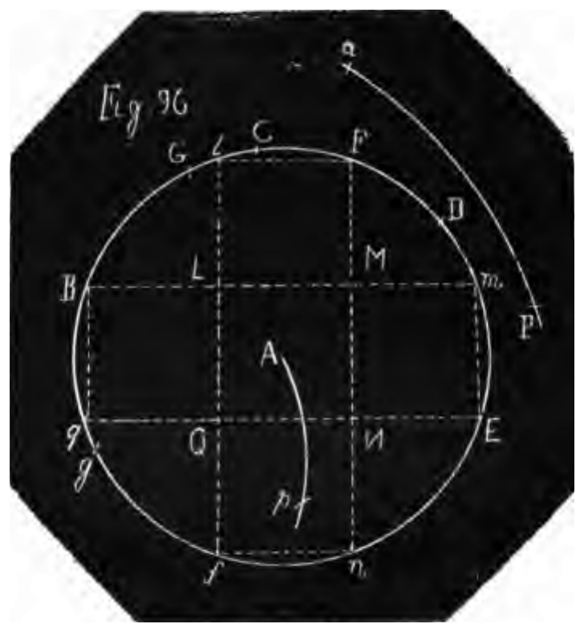

§§ 186–192: Five-Square Cross & Seven-Hexagon Flower¶
186. Problem. In a circle (Fig. 96) of given radius \(AB\), to inscribe five equal squares, of which one is concentric with the circle and the others touch it, each having one side in common with the central square.
Solution. Make chords \(BC, CD, DE\) equal to radius \(AB\); make \(BD = Ba = Ea\), and chords \(BF, Bf\) equal to \(Aa\). With radius \(AB\) and center \(a\), cut the circle at \(G\), and make chord \(Gg\) equal to \(Aa\).


With
f. 0139 · p. 114radius \(ga\) and center \(g\), describe arc \(aP\), and under it lay chord \(aP = aA\). With the same center \(g\) and radius \(gA\), describe arc \(Ap\) along the direction of arc \(aP\), and make \(aA = Pp\). Next make chords \(Bq, fn, Em, Fl\) equal to \(Ap\). With the same radius \(Ap\) and centers \(B, q, f, n, E, m, F, l\), describe arcs intersecting inside the circle at \(L, Q, N, M\); \(LMNQ\) will be the central square, and \(BLQq, fQNn, ENMm, FMLl\) the other required squares.
Demonstration. Comparing points \(a, A, G, B, q\) of this figure with points \(Q, p, A, R, S\) of Fig. 4, we obtain from § 21 the equation \((ag)^2 = (aB)^2 + Gg \cdot Aa\); setting radius \(AB = 1\), \((ag)^2 = 3 + 2 = 5\) (§ 27), so \(ag = \sqrt{5}\). Also \(aP = aA = \sqrt{2}\), and \(ga : aP :: gA : Ap\) (§ 93), i.e., \(\sqrt{5} : \sqrt{2} :: 1 : Ap\); hence \(Ap = \sqrt{\frac{2}{5}} = Em\). Since \(BCDE\) is a semicircle (§ 64), angle \(BmE\) is right (III.31), so \((BE)^2 = (Bm)^2 + (mE)^2\), i.e., \(4 = (Bm)^2 + \frac{2}{5}\); hence \((Bm)^2 = 9 \cdot \frac{2}{5}\) and \(Bm = 3\sqrt{\frac{2}{5}} = 3mE\). The same value is found for \(qE\), and all other angles of quadrilateral \(BmEq\) are right, lying in semicircles; thus it is a rectangle, and likewise \(Flfn\) is a rectangle. Setting chord \(Em = k\), \(mF\) is the chord of the complement to the quadrant \(= h\) (§ 159), giving \(h^2 = 2 - 2k\sqrt{1 - \frac{1}{4}k^2}\). With \(k^2 = \frac{2}{5}\), \(h^2 = 2 - 2k\sqrt{\frac{9}{10}} = 2 - 2\sqrt{\frac{9}{25}} = 2 - \frac{6}{5} = \frac{4}{5} = 2k^2\), i.e., \((Fm)^2 = (FM)^2 + (Mm)^2\); thus angle \(FMm\) is right (I.48), and likewise \(BLl, fQq, ENn\). Next calling \(x\) the distance from \(m\) to the foot of the perpendicular from \(F\) onto \(Bm\), we have (II.13) \((BF)^2 = (Fm)^2 + (Bm)^2 + 2Bm \cdot x\), i.e., \(2 = \frac{4}{5} + \frac{18}{5} - 6x\sqrt{\frac{2}{5}}\), whence \(x\sqrt{\frac{2}{5}} = \frac{2}{5}\) and \(x = \sqrt{\frac{2}{5}} = mM\). Calling \(y\) the perpendicular from \(F\) onto \(Bm\), \(y^2 = (Fm)^2 - x^2 = \frac{2}{5}\), so \(y = \sqrt{\frac{2}{5}} = FM\). Hence point \(M\) is proved to lie on \(Bm\), and likewise point \(L\) lies on it. Since \(Bm = 3Em = Mm + BL + Em\), we also have \(LM = Em\), and the other sides \(MN, NQ, LQ\) are proved equal to the same value. The exterior angles at \(L, M, N, Q\) of quadrilateral \(LMNQ\) being right,
f. 0140 · p. 115so too are the interior ones, giving the five required squares.
187. Problem. Given (Fig. 97) the five extreme points \(A, B, C, D, E\) of a regular pentagon, to find the five points \(a, b, c, d, e\) in which the diagonals of that pentagon would intersect.
Solution. With the side \(AB\) of the pentagon taken as radius and centers \(A, B, C, D, E\), mark arcs intersecting at \(a, b, c, d, e\). It will be done.
Demonstration. Supposing the diagonals drawn and the sides of pentagon \(ABCDE\) marked, we have angle \(BAC = BDA\) (III.29) \(= CAD\), whence \(Ab = bD\) (I.6). Also \(BbA = bDA + bAD\) (I.32) \(= BAb + bAD = BAD = ABD\) (I.5). Hence triangle \(ABb\) is isosceles (I.6), so \(AB = Ab = bD\). Q.E.D.
This figure is the pentalpha, or the Hygieia of Pythagoras.
188. Problem. In a circle (Fig. 98) of given radius \(AB\), to inscribe six regular pentagons.
Solution. Along the circumference make \(AB = BC = CD = DE = Ed\); then \(BD = Ba = Ea\); then \(Aa = BF = Db = db\). Along
f. 0141 · p. 116the circumference make \(bF = BP = PQ = QR = RS\). With the same radius \(bF\) and centers \(B, P, Q, R, S\), mark arcs intersecting at \(\beta, p, q, r, s\). Now with radius \(\beta p\) and centers \(\beta, P\), mark two arcs intersecting at \(c\). With the same radius and centers \(P, p\), mark two arcs intersecting at \(d\). We shall have two of the required pentagons, namely \(\beta pqrs\), the pentagon at center \(A\), and \(\beta pdPc\), touching the given circle at \(P\). In the same way the remaining vertices of the other four pentagons \(pqfQe, qrhRg, rskSi, s\beta mBl\) are found.
Demonstration. Points \(B, P, Q, R, S\) will be the vertices of a regular pentagon inscribed in the given circle (§§ 40, 128). Hence points \(\beta, p\) lie on diagonal \(BQ\), and \(p, q\) on diagonal \(PR\) (§ 187); since \(Bp = \beta Q\), \(B\beta = pQ\). Likewise \(Pp = qR\), and since \(BQ = PR\) (III.27), \(B\beta = Pp\) and \(\beta p = pq\). Likewise all sides of pentagon \(\beta pqrs\) are proved equal. Also angle \(\beta pq\), i.e., \(BpR = BPR + PBp\) (I.32); but \(PBp\), i.e., \(PBQ = QPR\), so \(\beta pq = BPQ\), and similarly the remaining angles of \(\beta pqrs\) equal those of \(BPQRS\); hence both are regular. Moreover angle \(QBR\), i.e., \(\beta Bs\), equals \(\beta qs\) (VI.20). Hence triangles \(\beta Bs, \beta qs\), both being isosceles, have equal base angles on \(\beta s\) (I.5, 32) and are wholly congruent (I.26). Thus triangles \(Bm\beta, \beta pq\) (having all sides equal) have equal angles (I.8), as do \(Bls, srq\); hence pentagon \(Bm\beta sl\) is regular, equal to \(\beta pqrs\), and likewise \(\beta cPdp, peQfq, qgRhr, riSks\). Q.E.D.
189. Point \(b\) will be the center of pentagon \(\beta mBls\), and distance \(bB\) the radius of the circle circumscribed about that pentagon and the other equal ones, as I shall immediately prove; which adds a fine new property to point \(b\), already remarked so many times in this Geometry. For besides the divisions in extreme and mean ratio arising through it on diameter \(BAE\) (§§ 45,
f. 0142 · p. 11746), and the determination made by it of \(bF\), the side of the pentagon inscribed in the circle of radius \(AB\) (§ 40), and of \(bA\), the side of the decagon inscribed in the same circle (§ 41), we also have \(Bb\) as the radius of the circle circumscribed about the six pentagons that can be inscribed in the greater circle of radius \(AB\), as in the present Problem. Indeed, setting radius \(AB = 1\), we have \(Ab = \frac{1}{2}(\sqrt{5} - 1)\) (§ 181); and since \((BE)^2 = (BQ)^2 + (QE)^2\) (III.31) \(= (BQ)^2 + (Ab)^2\), we obtain \(BQ = \sqrt{\frac{5 + \sqrt{5}}{2}}\). Also \(\beta Q = BP = bF = \sqrt{\frac{5 - \sqrt{5}}{2}}\) (§ 182). Hence \(BQ : \beta Q :: BQ \cdot \beta Q : (\beta Q)^2 :: \sqrt{5} : \frac{5 - \sqrt{5}}{2} :: 1 : \frac{1}{2}(\sqrt{5} - 1) :: BA : bA\). Therefore \(BQ : BQ - \beta Q :: BA : BA - bA\), i.e., \(BQ : B\beta :: BA : Bb\). Thus the two diagonals of pentagons \(BPQRS, Bm\beta sl\) are to each other as \(BA : bA\); hence since \(BA\) is the radius of the first pentagon, \(Bb\) will be the radius of the second (VI.20).
190. Problem. Given (Fig. 99) the vertices of a regular hexagon \(BCDEdc\), to find the points \(l, m, n, g, p, q\) in which its diagonals not passing through the center intersect.
Solution. Make \(BD = Ba = Ea\); then \(BC = BA = CA = B\alpha\), \(aA = a\alpha\), and \(\alpha B = \alpha P = AP\). Now with radius \(aP\) and centers \(B, C\), mark two arcs intersecting at \(l\); with centers \(C, D\), two others intersecting at \(m\), and so on; these will be the required points.
Demonstration. Suppose the indicated diagonals intersect at \(l, m, n, g, p, q\). Since angle \(BDc = DcE\) (III.29), \(BD\) is parallel to \(cE\) (I.29); hence triangle \(Clm\) is similar to triangle \(CcE\) (VI.2, 5) and therefore equilateral.
f. 0143 · p. 118Likewise triangle \(Blq\) is similar to triangle \(BDd\). Since triangle \(CcE\) is congruent to triangle \(BdD\), having its sides equal to those of the latter (§ 2) (I.8, 4), and since side \(BD\) (and hence \(lm\)) is at the same distance from side \(cE\) as side \(Cc\) (and hence \(ql\)) is from side \(dD\) (III.14), if triangle \(BdD\) be superposed upon \(CcE\), line \(ql\) will fall upon \(lm\) and equal it; since \(Bl = lq\), \(Bl = lm\). Likewise \(Dm = ml\), so \(Bl = \frac{1}{3}BD = \frac{1}{3}\sqrt{3}\) (setting radius \(BC = AB = 1\)) (§ 2), and likewise \(Cl = \frac{1}{3}\sqrt{3}\). But we took \(Bl = Cl = aP = \frac{1}{3}\sqrt{3}\) (§ 185); hence \(l\) is one of the required points, and the same is proved for \(m, n, g, p, q\). Q.E.D.
191. Problem. In the circle (Fig. 100) of given radius \(AB\), to inscribe seven regular hexagons, one concentric with the circle and the others arranged around it.
Solution. Along the circumference of the given circle make \(AB = BC = CD = DE = Ed\); then \(DB = DV = dV\). With radius \(CV\) and centers \(C, A\), mark two arcs intersecting at \(P\); with the same radius \(PC\) and center \(P\), cut the given circumference at \(\delta\). Then \(d\delta\) will be the side of the hexagons to be inscribed, which are easily placed one beside another: with this same side \(d\delta\) as radius and centers \(d, \delta\), mark two arcs intersecting at \(\alpha\); with the same radius and center \(\alpha\), describe a circle in which inscribe a regular hexagon (IV.15) \(d\delta mnpq\). With the same radius and center \(A\), describe a circle, which

will pass through \(np\). In it describe the hexagon having \(pn\) as one of its sides. Upon the sides of this hexagon describe the remaining hexagons just as was first done on side \(d\delta\), and what was desired will be done.
Demonstration. Setting for brevity \(AB = 1\), we have \(CP = CV = \sqrt{7}\) (§ 100) \(= AP\); then \(AP : A\delta :: A\delta : \delta d\) (§ 86), i.e., \(\sqrt{7} : 1 :: 1 : \delta d\), so \(\delta d = \sqrt{\frac{1}{7}}\).
Suppose for a moment the required hexagons inscribed, and let the unknown side \(d\delta\) of them be \(= x\); bisect it at \(v\), and draw \(Av\), which will be perpendicular to it (§ 83) and pass through \(\alpha\), center of the hexagon whose side is \(d\delta\), also bisecting side \(pn\) of the central hexagon at \(\mu\). In equilateral triangle \(Apn\), \(pn : A\mu :: 1 : \frac{1}{2}\sqrt{3}\) (§ 104), so \(x : A\mu :: 1 : \frac{1}{2}\sqrt{3}\), hence \(A\mu = \frac{1}{2}x\sqrt{3}\) and \(Av = 3A\mu = \frac{3}{2}x\sqrt{3}\), while \(dv = \frac{1}{2}x\). Thus \(1 = (Ad)^2 = (Av)^2 + (dv)^2 = \frac{27}{4}x^2 + \frac{1}{4}x^2 = 7x^2\), so \(x^2 = \frac{1}{7}\) and \(x = \sqrt{\frac{1}{7}}\), the exact length determined for \(d\delta\) in the Solution. Q.E.D.
This Problem is found in Pappus, Book VIII, Prob. 15, Prop. 19, solved with ruler and compass no more simply than this. He also added to it a mechanical construction.
192. I believe I have now fulfilled what I promised in §§ 6 and 7. And as to the first point, I have already given all the elements of the Geometry of the Compass; namely all those Problems which suffice for finding by the compass alone, without the ruler, every point that can be found by compass and ruler together. To prove this (§ 71), observe: first, that in Elementary Geometry the points of a Problem are found either by the intersection of arcs with one another— and this belongs wholly to the Geometry of the Compass—or by the intersections of arcs and straight lines, or of straight lines with one another; and this whole topic is comprehended in Book Seven, § 110 and following. Next, any straight line necessary to the Solution of a Problem is determined by magnitude and position. With respect to magnitude, I have taught how to enlarge, diminish, and divide any finite magnitude into any number of parts in Book Three, § 64
f. 0145 · p. 120and following, and in Book Four, §§ 72, 73, and 74; and likewise to find third, fourth, and mean proportionals, as well as to divide a straight line in any given ratio, in Book V, § 86 and following. With respect to the position of straight lines, it is determined by the position of two points for each line; here Book Four, § 76 and following, will serve to find the points for every case of perpendiculars and parallels. To place straight lines at any other given angle to one another by means of two points, Book VIII, § 113 and following, will supply what is needed. The division of the circumference of the circle and of every arc in every manner possible to Elementary Geometry is exhausted in Book II, § 27 and following. After all this, I do not see what other element could be desired. As for the choice of Problems I have gathered here, I shall leave it to Mathematicians to judge whether, in a great number of useful or delightful cases, it is not worth the trouble—not only for precision of result, but also for swiftness of construction—to lay aside the ruler and use the compass alone up to that limit where, all points needed for the Problem having been found, one must, if required, draw one or more straight lines from one point to another, which certainly cannot be marked by compass alone and require the ruler.